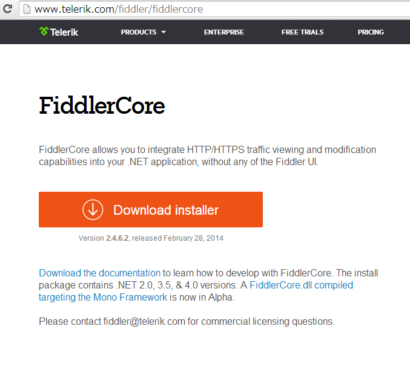
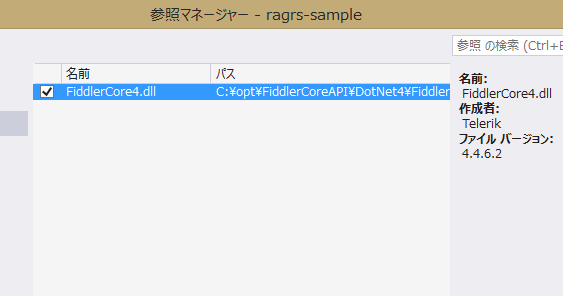

FiddlerCoreでRead-Access Geo Redundant Storage を検証する
Windows Azure – 技術者でつなぐ日めくりカレンダー の 3/2 の記事です。先日、Windows Azure 4周年記念 ＆ Japan DCオープンマジデシタ！JAZUG大会 のLTで、Azure Storageには3つの可用性設定があるという話をしました。例によって、時間内には収まらず。「続きはWebで・・・」ということで続きです orz
まずはLTの内容の復習から、簡単にまとめると下記のような内容です。
振り返り
Azure Storageの可用性設定（冗長構成）には3種類ある。
- ローカル冗長ストレージ (LRS=Locally Redundant Storage) データセンター内3箇所、同期
- 地理冗長ストレージ (GRS=Geo Redundant Storage) 地理的に離れた場所への複製（Local 3箇所＋リモート3箇所）、リモートは非同期、フェイルオーバー
- 読み取りアクセス地理冗長ストレージ (RA-GRS=Read Access - Geo Redundant Storage) PREVIEW 地理的に離れた場所にあるデータを読む機能
読み取りアクセス地理冗長ストレージ (以下、RA-GRS）は、現状Previewなので、まずは Windows Azure Preview のページで申し込みをする必要がある。
SDKの対応状況
RA-GRSの新機能を使うには REST version 2013-08-15 を使うStorage SDKが必要。ただし、RESTでEndpointが違うだけだから自前でもアクセスするだけならそんなに難しくない。
- .NETだと、Storage Client Library 3.0 以降
- Javaだと、Windows Azure Storage SDK for Java 0.5.0 以降
- その他、各自対応
上記2つのSDKには、Blobs, Tables and Queues の最終同期時刻（Last Sync Time）をクエリーする機能と primary にアクセしできなかった時に secondary に自動的に retry する機能、並びにLocationMode で参照先の設定がる。 リトライは、IRetryPolicyを拡張した IExtendedRetryPolicy が追加されている。これではリトライ時に参照先を切り替えするようになっている。
LTの資料
RA-GRS Windows Azure Storage LT
ここからが本題です。
確認する
RA-GRSで障害が起きた時の IExtendedRetryPolicy の動作確認をしたいのですが、そうは都合良くデータセンターの障害が起きるわけはありません。デバッガーでBreakしてネットワークを切断するとか、変数を書き換えるとかの方法もありますが、なんども繰り返すのは手間が掛かるしパターン増やすと面倒です。そんな時に、丁度いいタイミングで CLR/H in Tokyo 第1回 で過酷な争奪戦に勝利し「実践Fiddler」をゲットしました。

FidderCoreを使うとHTTP通信の途中に割り込んで内容を変更することが簡単に出来ます。フルスクラッチでProxy書いて「ゴニョゴニョ」すると結構手間がかかるので、今回は、FeddlerCoreを使って サクッとLocationMode.PrimaryThenSecondary を指定した時のリトライ動作を確認します。 本にはいろいろ詳しく書いてあるので、興味が出た方は是非！
準備
下記の場所から、インストーラーを落としてきて入れます。exeが落ちてくるのでインストールすると、 FiddlerCoreAPI というディレクトリーに入ります。
http://www.telerik.com/fiddler/fiddlercore
インストール先の FiddlerCoreAPI\DotNet4\FiddlerCore4.dll を参照に追加します。
今回読み込みアクセスを試したいので、予めBlob にファイルを上げて起きます。
Blobからのダウンロードのコードは下記のような感じです。CloudBlobClient の LocationModeを設定しています。Client全体の設定はここで書き、ここのリクエストでは、BlobRequestOptionsで設定します。それ以外は普通のBlobからDownloadするコードですね。 try の次の行ので読んでいる、FiddlerCoreSetup()でFiddlerCoreの設定を行っています。
static void Main(string[] args)
{
var connectionString = CloudConfigurationManager.GetSetting("ConnectionString") ?? "UseDevelopmentStorage=true";
var account = CloudStorageAccount.Parse(connectionString);
var client = account.CreateCloudBlobClient();
try
{
FiddlerCoreSetup(client.StorageUri.PrimaryUri.Host);
// プライマリ→セカンダリで切り替え
client.LocationMode = LocationMode.PrimaryThenSecondary;
var container = client.GetContainerReference("jejeje");
var blob = container.GetBlockBlobReference("cray.png");
blob.DownloadToFile("cray.png", FileMode.OpenOrCreate);
}
finally
{
FiddlerCoreShutdown();
}
}
FiddlerCoreSetup() の中を見てみましょう。基本的には必要な処理をFiddlerのイベントハンドラに追加して、FidderCore プロキシを起動するだけです。
private static void FiddlerCoreSetup(string blockedHostName)
{
FiddlerApplication.AfterSessionComplete += os =>
Console.WriteLine("AfterSessionComplete Session {0}({4}):{1} {2} {3}",
os.id, os.responseCode, os.RequestMethod, os.fullUrl, os.oResponse.MIMEType);
FiddlerApplication.BeforeRequest += os =>
{
if (os.HostnameIs(blockedHostName))
{
Console.WriteLine("BeforeRequest Session {0} {1} {2}", os.id, os.hostname, os.host);
os.host = blockedHostName + ".jejeje";
}
};
FiddlerApplication.Startup(0, FiddlerCoreStartupFlags.ChainToUpstreamGateway);
var endpoint = string.Format("127.0.0.1:{0}", FiddlerApplication.oProxy.ListenPort);
var feddlerProxy = new WebProxy(endpoint);
WebRequest.DefaultWebProxy = feddlerProxy;
Console.WriteLine(endpoint);
}
private static void FiddlerCoreShutdown()
{
FiddlerApplication.Shutdown();
}
ちょっと細かく追いかけてみます。
AfterSessionComplete はHTTP セッションが完了した後に生成されるイベントです。 このイベントハンドラにロギング代わりにコンソールへの書き出しを追加します。。今回は、ここのログを見て何処にアクセスに行っているのかを確認します。
BeforeRequest はHttp リクエストのデータが揃いサーバーに接続する前に生成されるイベントです。このイベントハンドラに、Primary のホストが接続先だったときに、存在しないhostに繋ぎに行くようなハンドラを追加します。
FiddlerApplication.Startup() を呼び出して、FeddlerCoreプロキシインスタンスを起動します。ポートに0を指定すると、FeddlerCore が自動的に空いているポートを探してリスニングに入ってくれます。ポートが使用中の問題が発生しないので便利なので、ポート番号を固定したいとき以外は0で良いと思います。自動で割り当てられたポート番号は FiddlerApplication.oProxy.ListenPort で確認できます。
今回は、このアプリケーションから出るリクエストだけ操作できればいいので、 FiddlerCoreStartupFlags に ChainToUpstreamGateway を指定します。その他に、システム全体のProxyに入りたい場合は、 RegisterAsSystemProxy を使います。
そして、 WebRequest の DefaultWebProxy を、FeddlerCoreプロキシ で書き換えます。これで、Azure Storage Client のリクエストが、Primary に向いているときは失敗するようになりました。
これで、実行すると下記のようになります。
127.0.0.1:19282
BeforeRequest Session 1 ragrsomi001jp.blob.core.windows.net ragrsomi001jp.blob.core.windows.net
AfterSessionComplete Session 1(text/html):502 GET http://ragrsomi001jp.blob.core.windows.net.jejeje/jejeje/cray.png?timeout=90
AfterSessionComplete Session 2(image/png):200 GET http://ragrsomi001jp-secondary.blob.core.windows.net/jejeje/cray.png?timeout=90
最初に、Primary にアクセスし、その後 Secondary にアクセスし直しているのがわかります。
Primary へのアクセスが 502 Bad Gateway なのはちょっとイマイチですが、FeddlerCoreがProxyで入るので仕方がないのかもしれません。
まとめ
実は、FeddlerCoreは、Azure Storage ClientのUnit Testでも使われています。 GitHub azure-storage-net HttpMangler.cs 今回は非常に簡単な例を紹介しましたが、FeddlerCoreを使うとレスポンスを偽装したり変更したりなど柔軟にできて、通常エラーにならないような場合のテストケースを作ることができます。手軽に使えるのでカジュアルに使っても便利ですし、がっちりUnitTestを作るときにも役に立ちます。
CLR/H in Tokyo 第1回 はいろいろ知らないことを聴けたので面白かったですね。特に、技術者のブランディング戦略の重要性と独自の進化を遂げたプロビジョニング、構成管理ツールの話が秀逸だった。
最後に１つだけ、FiddlerCore をnugetで配布してくれると嬉しいなぁ・・・